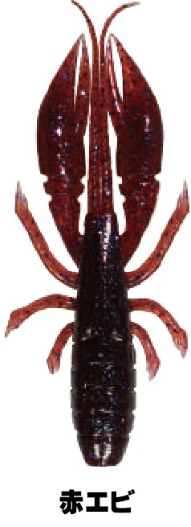
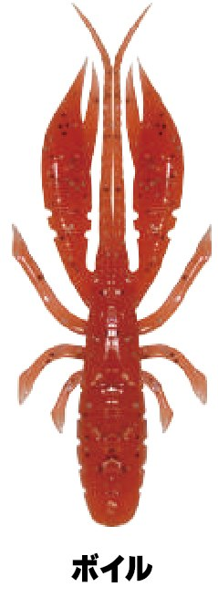
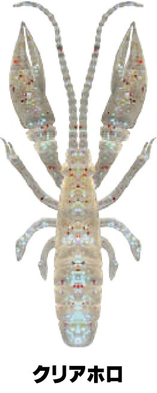
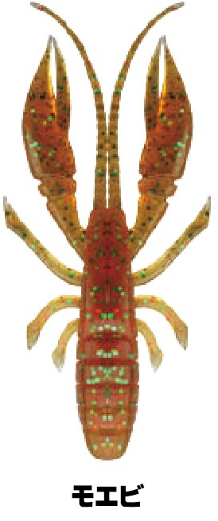

ハタ喰い・蝦
ハタ喰い・蝦はRUDIE'S（ルーディーズ）のエビ型ワームです。
ハタはシーズンや場所によって小魚やイカも食べますが、ボトムにいる時間が長いこともあり、一年を通してもっとも捕食しているのはエビやカニなどの甲殻類です。ハタ喰い・蝦は、その甲殻類パターンのために作られた専用ワーム。ターゲットが警戒心を抱かずにバイトできるよう、リアルなシルエットを追求しています。

画像出典:RUDIE'S公式HP
スペック
- メーカー
- RUDIE'S（ルーディーズ）
- タイプ
- エビ型ワーム
- サイズ
- 2.5inch・3.0inch・3.5inch
- 入数
- 2.5inch：8本／3.0inch：7本／3.5inch：6本
- カラー
- 全13色（各サイズ）
- 特徴
- えびフレーバー配合・爪の根元にスリット
- ターゲット
- ハタ類などのロックフィッシュ
- 価格
- 2.5・3.0inch：600円／3.5inch：650円（税別）
▼今すぐチェック

ハタ喰い・蝦の特徴
リアルなシルエットが、まるで生きているかのように艶めかしく動く
-
警戒させないリアルなシルエット
ターゲットが警戒心を抱くことなく、すぐにバイトへつながるよう、リアルなエビのシルエットを追求している。
-
水流に追従する爪のスリット
爪の根元にスリットを入れていて、アクションや水流の動きに追従して艶めかしく動く。
-
たっぷりのえびフレーバー
集魚効果を高めるため、蝦のフォーミュラをふんだんに配合。バイトの効果を高めるポイントになっている。
ハタ喰い・蝦の使い方
テキサスリグやジグヘッドにセットしてボトムまで沈め、リフト＆フォールやズル引きで底のエビを演出するのが基本です。
着底後にしっかり止める時間を作ると、爪が水流で揺れて食わせの間になります。根の荒い場所では、すり抜けの良いテキサスリグがオススメです。
ハタ喰い・蝦の得意な状況
ハタ類がボトムの甲殻類を食べている状況、ハタゲームの基本になる「甲殻類パターン」全般が得意です。
公式でも、甲殻類パターンは「絶対に外してはならないメソッド」と紹介されていて、ハタ狙いの軸になる1本です。
ワンポイント
公式の適合フック表では、2.5inchは根魚狩りフック#2・J.H 5〜7g、3.0inchは#1・J.H 5〜7g、3.5inchは1/0・J.H 10〜20gがベストマッチ（◎）になっています。
サイズの使い分け
| サイズ | 入数・価格（税別） | 適合フック（根魚狩りフック） |
|---|---|---|
| 2.5inch | 8本・600円 | #2（◎）・#1 |
| 3.0inch | 7本・600円 | #1（◎）・1/0 |
| 3.5inch | 6本・650円 | 1/0（◎）・2/0 |
※公式ページと「RUDIE'S ワーム製品 適合フックサイズ表」より（◎がベストマッチ）。
オススメカラー
ハタ喰い・蝦は全13色（グローや2トーンを含む）。そのうち4色を紹介します。

赤エビ根魚の定番の赤系。まず使いたい色。

ボイルボイルしたエビのような赤オレンジ。濁りやローライトに。

クリアホロ透け感のあるクリアにホロ。澄んだ水で自然に見せたい時に。

モエビナチュラルなブラウン系。エビを食べている時に。
画像出典:RUDIE'S公式HP
ハタ喰い・蝦に似ているルアー
-
 ハタ喰い・蟲
RUDIE'S
詳細はこちら＞
ハタ喰い・蟲
RUDIE'S
詳細はこちら＞
同じハタ喰いシリーズのブレード付きワーム。アピールを強めたい時に。
-
 ハタ喰い・鵺
RUDIE'S
詳細はこちら＞
ハタ喰い・鵺
RUDIE'S
詳細はこちら＞
同じハタ喰いシリーズのラバー付きワーム。ボトムシェイクでも誘いたい時に。
-
 エビのさんぽ
BREADEN
詳細はこちら＞
エビのさんぽ
BREADEN
詳細はこちら＞
エビ型のプラグ。ただ巻きでエビを演出したい時に。